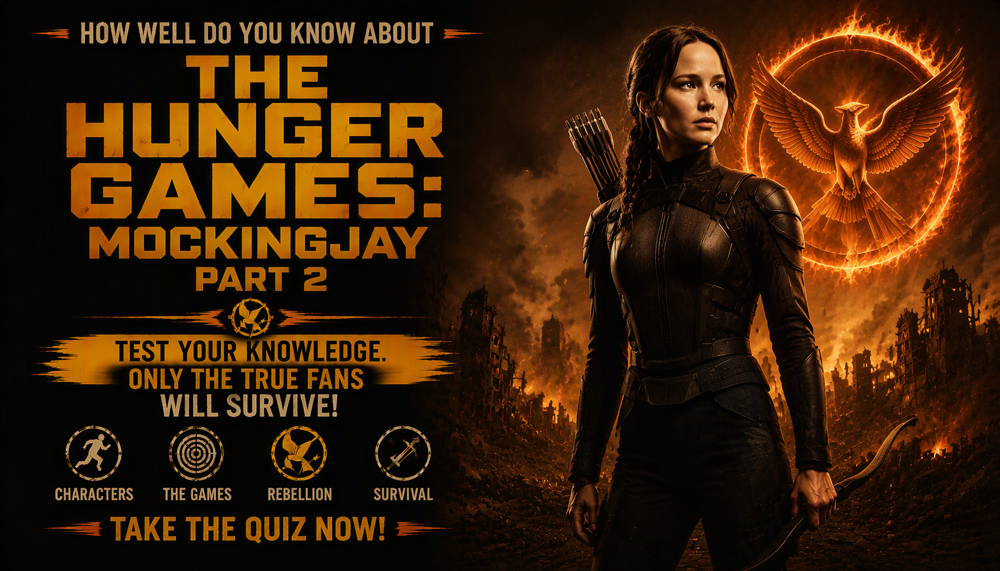

DYSTOPIAN • SCIENCE FICTION • MOVIE TRIVIA
The Hunger Games: Mockingjay – Part 2 Quiz
Think you know the final battle for Panem? Test your knowledge of Katniss, Squad 451, the Capitol mission, Finnick, Peeta, Coin, Snow and the events that bring the rebellion to its final confrontation.
One answer is correct for each question. Read carefully — some questions focus on details from the final act of the movie.
This quiz contains spoilers for the movie


About The Movie
The Hunger Games: Mockingjay – Part 2 is the 2015 concluding film in the original four-film Hunger Games series. Directed by Francis Lawrence, the film follows Katniss Everdeen as the rebellion against the Capitol enters its final stage and the fighting reaches the Capitol itself.
After the events of Mockingjay – Part 1, Katniss becomes increasingly involved in the military campaign against President Snow. She joins Squad 451, a group sent into the Capitol while also being used as the public face of the rebellion. Their mission exposes them to the Capitol's defensive pods, Peacekeepers and increasingly dangerous conditions underground.
The film combines the military assault on the Capitol with the personal conflicts surrounding Katniss, Peeta, Gale, Snow and President Coin. Its final section deals with the fall of the Capitol, the death of Prim and Katniss's decision about the future of Panem.
Movie Details
- Release year: 2015
- Director: Francis Lawrence
- Genre: Dystopian science fiction, action and adventure
- Runtime: 137 minutes
- Based on: Suzanne Collins's 2010 novel Mockingjay
- Main setting: The Capitol and the surrounding areas of Panem
- Central character: Katniss Everdeen
- Key conflict: The rebellion's final campaign against President Snow and the Capitol
The film stars Jennifer Lawrence as Katniss Everdeen, Josh Hutcherson as Peeta Mellark, Liam Hemsworth as Gale Hawthorne, Donald Sutherland as President Snow and Julianne Moore as President Coin. Other major characters include Finnick Odair, Haymitch Abernathy, Boggs, Cressida, Pollux and Tigris.
Important Story Elements
Squad 451
Squad 451 is the unit Katniss joins during the Capitol campaign. Although the squad is presented as part of the military operation, Katniss and the other members are also filmed as propaganda for the rebellion.
The Holo
The Holo is a holographic mapping device used by Squad 451 to navigate the Capitol. It becomes particularly important when the streets are filled with dangerous pods and the squad has to find alternative routes.
Capitol Pods
The Capitol streets contain traps known as pods. These defenses were designed by the Gamemakers and turn the city itself into something resembling another Hunger Games arena.
The Sewer Tunnels
Squad 451 eventually travels through the Capitol's underground tunnels to avoid the dangerous streets. The route creates a different kind of threat when Snow's forces send reptilian muttations after them.
The Lizard Mutts
The Capitol uses genetically engineered muttations to hunt Katniss and the squad underground. Their attack becomes one of the most dangerous sequences of the Capitol mission.
What This Quiz Covers
This 25-question quiz focuses specifically on The Hunger Games: Mockingjay – Part 2. It is designed around details that appear in the movie rather than general knowledge of the entire Hunger Games franchise.
- Katniss Everdeen and her decisions
- Squad 451 and its members
- The Capitol mission
- Finnick, Peeta, Gale and Boggs
- Capitol pods and defenses
- The Holo and underground tunnels
- Lizard muttations
- Tigris and the Capitol safehouse
- President Snow and President Coin
- Prim's death and the final confrontation
- The ending and aftermath of the rebellion
How The Quiz Works
The quiz contains 25 questions. Every question has four possible choices, with one correct answer. Questions focus on characters, events, locations, objects and story details from the movie.
Each correct answer earns 1 point. Incorrect answers earn 0 points. Your final score is converted into a percentage based on the number of correct answers.
The result screen shows your correct answers, incorrect answers, total questions and accuracy. You can then replay the quiz or share your result with friends.
Quiz Navigation
Starting the quiz
Select START QUIZ on the opening screen to begin. The first question will appear immediately.
Selecting an answer
Each question presents four choices. Select the answer you believe is correct before moving forward.
Next and Back
Use Next to continue through the quiz. Use Back to return to an earlier question and review or change your selection.
Finishing the quiz
Answer all 25 questions and submit the quiz. Your final score and movie knowledge result will then be displayed.
Try Again
Select TRY AGAIN after receiving your result to start a new attempt and test your memory again.
Share and Challenge
Use SHARE MY RESULT to share your performance or CHALLENGE YOUR FRIENDS to invite other fans to take the quiz.
FAQ
How many questions are in the quiz?
There are 25 questions, and each question has four possible choices.
What is the maximum score?
The maximum score is 100%. A perfect result means all 25 questions were answered correctly.
Which Hunger Games movie does this quiz cover?
This quiz covers the 2015 film The Hunger Games: Mockingjay – Part 2. It does not combine questions from the earlier Hunger Games films.
Do I need to watch the movie before taking the quiz?
It is recommended. Several questions concern specific scenes, character decisions and events that are difficult to answer from general knowledge of the Hunger Games franchise alone.
Is this quiz only about Katniss?
No. Katniss is central to the story, but the quiz also covers Squad 451, Peeta, Finnick, Gale, Boggs, Snow, Coin, Tigris and other movie events.
Does the quiz contain spoilers?
Yes. Because the questions cover the entire movie, including its final act, the quiz contains major spoilers for Mockingjay – Part 2.
What does my score mean?
Your percentage represents the proportion of questions you answered correctly. The result categories are based on your performance in this quiz.
Can I take the quiz again?
Yes. Select TRY AGAIN after completing the quiz to begin another attempt.
Can I challenge my friends?
Yes. The CHALLENGE YOUR FRIENDS option lets you share the challenge with other Hunger Games fans.
Spoiler Warning
This page contains spoilers for The Hunger Games: Mockingjay – Part 2. The information above discusses Squad 451, the Capitol mission, Finnick's fate, Prim's death, Snow, Coin and the ending of the movie.
If you have not watched the film and want to experience its major events without advance information, consider watching it before reading the detailed sections or taking the quiz.